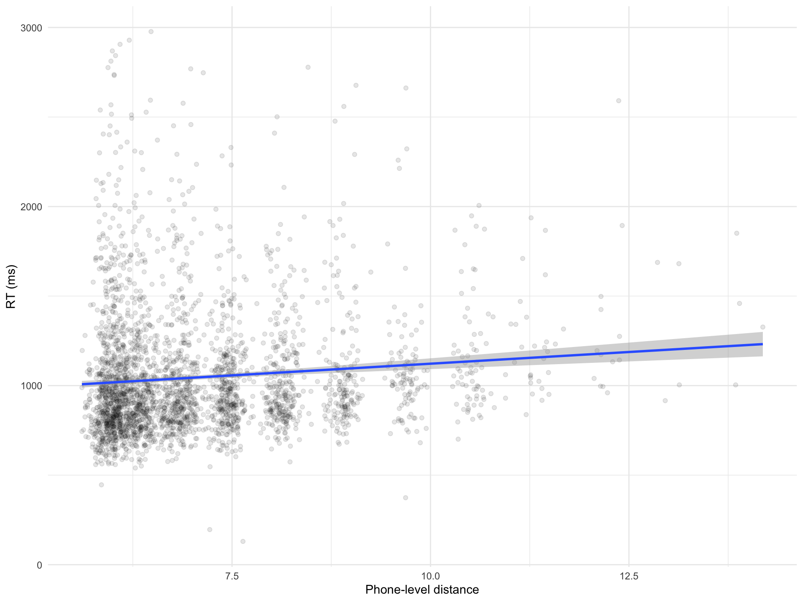
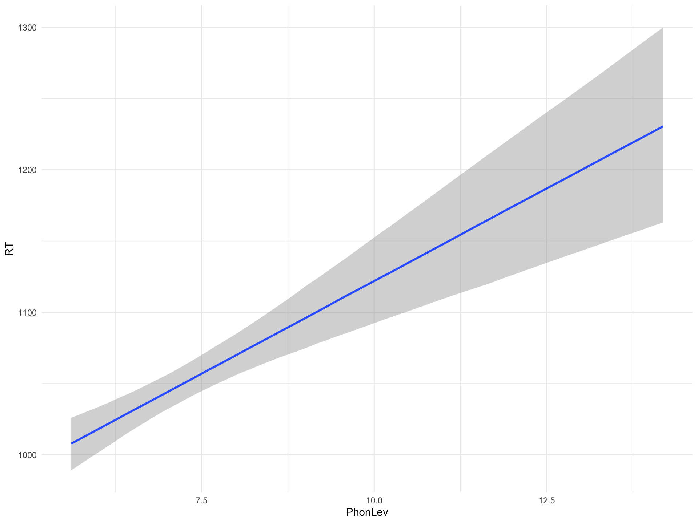
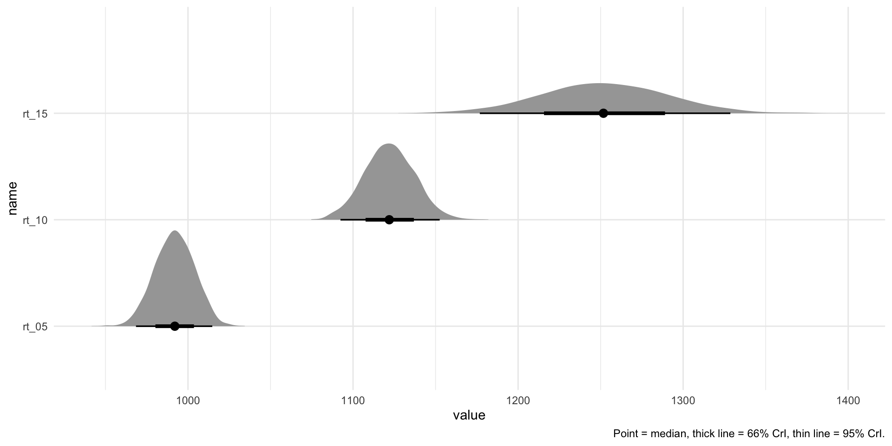

Introduction to Bayesian regression models
02 - Bayesian regression
Regression models
- Simplest regression model:
\[ y \sim \beta_0 + \beta_1 \cdot x \]
where \(y\) and \(x\) are numeric variables.
MALD
Does the mean phone-level distance affect reaction times?
. . .
Mean phone-level distance is a proxy of word “uniqueness”.
More unique words should take longer to recognise as real words because there are less competitors (i.e. similar words) that can have a facilitatory effect on recognition.
MALD: RT and PhonLev
MALD: regression
\[ RT \sim \beta_0 + \beta_1 \cdot \text{PhonLev} \]
. . .
or
\[ \begin{align} RT & \sim \beta_0 + \beta_1 \cdot \text{PhonLev} + \epsilon\\ \epsilon & \sim Gaussian(0, \sigma) \end{align} \]
. . .
or
\[ \begin{align} RT & \sim Gaussian(\mu, \sigma)\\ \mu & = \beta_0 + \beta_1 \cdot \text{PhonLev}\\ \end{align} \]
The model estimates the posterior probability distributions of \(\beta_0, \beta_1, \sigma\).
What are your expectations?
MALD: regression
brm_lev <- brm(
RT ~ 1 + PhonLev,
data = mald,
family = "gaussian",
file = "./data/cache/brm_lev.rds",
chains = 4,
iter = 2000,
cores = 4
)
summary(brm_lev) Family: gaussian
Links: mu = identity; sigma = identity
Formula: RT ~ 1 + PhonLev
Data: mald (Number of observations: 3000)
Draws: 4 chains, each with iter = 2000; warmup = 1000; thin = 1;
total post-warmup draws = 4000
Regression Coefficients:
Estimate Est.Error l-95% CI u-95% CI Rhat Bulk_ESS Tail_ESS
Intercept 861.62 35.11 793.25 929.05 1.00 4139 2815
PhonLev 26.05 4.85 16.70 35.40 1.00 4169 2866
Further Distributional Parameters:
Estimate Est.Error l-95% CI u-95% CI Rhat Bulk_ESS Tail_ESS
sigma 345.95 4.54 337.09 354.71 1.00 3849 2919
Draws were sampled using sampling(NUTS). For each parameter, Bulk_ESS
and Tail_ESS are effective sample size measures, and Rhat is the potential
scale reduction factor on split chains (at convergence, Rhat = 1).Interpret the summary: Intercept
Regression Coefficients:
Estimate Est.Error l-95% CI u-95% CI Rhat Bulk_ESS Tail_ESS
Intercept 861.62 35.11 793.25 929.05 1.00 4139 2815
PhonLev 26.05 4.85 16.70 35.40 1.00 4169 2866Intercept is \(\beta_0\).
\(\beta_0\) is the expected mean RT when
PhonLevis 0.The posterior probability distribution of \(\beta_0\) is \(\mathcal{P}(862, 35)\).
There is a 95% probability that the mean RTs when
PhonLevis 0 is between 793 and 929 ms, conditional on the model and data. This is the 95% Credible Interval (CrI) of \(\mathcal{P}(862, 35)\).
Interpret the summary: PhonLev
Regression Coefficients:
Estimate Est.Error l-95% CI u-95% CI Rhat Bulk_ESS Tail_ESS
Intercept 861.62 35.11 793.25 929.05 1.00 4139 2815
PhonLev 26.05 4.85 16.70 35.40 1.00 4169 2866PhonLev is \(\beta_1\).
\(\beta_1\) is the expected difference in RT for each unit change of
PhonLev.The posterior probability distribution of \(\beta_1\) is \(\mathcal{P}(26, 5)\).
There is a 95% probability that each unit change of
PhonLevcorresponds to a change in mean RT between +17 and +34 ms, conditional on the model and data. This is the 95% Credible Interval (CrI) of \(\mathcal{P}(26, 5)\).
Effect of PhonLev on RTs
conditional_effects(brm_lev, "PhonLev")
MCMC draws
brm_lev_draws <- as_draws_df(brm_lev)
brm_lev_draws# A draws_df: 1000 iterations, 4 chains, and 6 variables
b_Intercept b_PhonLev sigma Intercept lprior lp__
1 878 25 344 1054 -13 -21803
2 880 25 345 1056 -13 -21803
3 872 25 340 1050 -13 -21803
4 821 32 341 1047 -13 -21803
5 838 30 344 1054 -13 -21803
6 859 25 352 1037 -13 -21803
7 861 25 350 1039 -13 -21803
8 861 28 348 1057 -13 -21803
9 916 20 346 1056 -13 -21804
10 844 29 350 1052 -13 -21803
# ... with 3990 more draws
# ... hidden reserved variables {'.chain', '.iteration', '.draw'}Predicted RTs at representative values of PhonLev
range(mald$PhonLev)[1] 5.608767 14.186571brm_lev_draws <- brm_lev_draws |>
mutate(
# RTs when PhonLev is 5
rt_05 = b_Intercept + b_PhonLev * 5,
# RTs when PhonLev is 10
rt_10 = b_Intercept + b_PhonLev * 10,
# RTs when PhonLev is 15
rt_15 = b_Intercept + b_PhonLev * 15,
)Predicted RTs at representative values of PhonLev: plot
library(ggdist)
brm_lev_draws |>
select(rt_05, rt_10, rt_15) |>
# Pivot so to make plotting easier
pivot_longer(everything()) |>
# Pivot creates a name column with values `rt_05, rt_10, rt_15`
# and a value column with the draws values
ggplot(aes(value, name)) +
# Stat halfeye from ggdist
stat_halfeye() +
labs(
caption = "Point = median, thick line = 66% CrI, thin line = 95% CrI."
)
Calculating CrIs from the draws
library(posterior)
brm_lev_cri <- brm_lev_draws |>
select(rt_05, rt_10, rt_15) |>
pivot_longer(everything()) |>
group_by(name) |>
summarise(
# Use quantile2() from posterior package
lo_95 = round(quantile2(value, 0.025)),
hi_95 = round(quantile2(value, 0.0975))
)
brm_lev_cri# A tibble: 3 × 3
name lo_95 hi_95
<chr> <dbl> <dbl>
1 rt_05 968 976
2 rt_10 1092 1103
3 rt_15 1177 1203Width of the CrIs
brm_lev_cri |>
mutate(
cri_width = hi_95 - lo_95
)# A tibble: 3 × 4
name lo_95 hi_95 cri_width
<chr> <dbl> <dbl> <dbl>
1 rt_05 968 976 8
2 rt_10 1092 1103 11
3 rt_15 1177 1203 26Reporting
We fitted a Bayesian Gaussian regression model with brms (Bürkner 2017) in R 4.5.0 (R Core Team 2025). The model had reaction times as the outcome variable and mean phone-level distance as the only predictor. The model was fitted with 4 MCMC chains and 2000 iterations per chains. The default brms priors were used.
According to the model results, for every increase of mean phone-level distance by 1 unit, reaction times increase by 17-34 ms, at 95% probability (\(\beta\) = 26.05, SD = 4.85). The 95% CrIs of the predicted reaction times at representative values of mean distance are: 968-976 ms for mean distance = 5, 1092-1103 ms for mean distance = 10, 1177-1203 for mean distance = 15.
References
Bürkner, Paul-Christian. 2017. “Brms: An r Package for Bayesian Multilevel Models Using Stan.” Journal of Statistical Software 80 (1): 128. https://doi.org/10.18637/jss.v080.i01.
R Core Team. 2025. R: A Language and Environment for Statistical Computing. Vienna, Austria: R Foundation for Statistical Computing. https://www.R-project.org/.